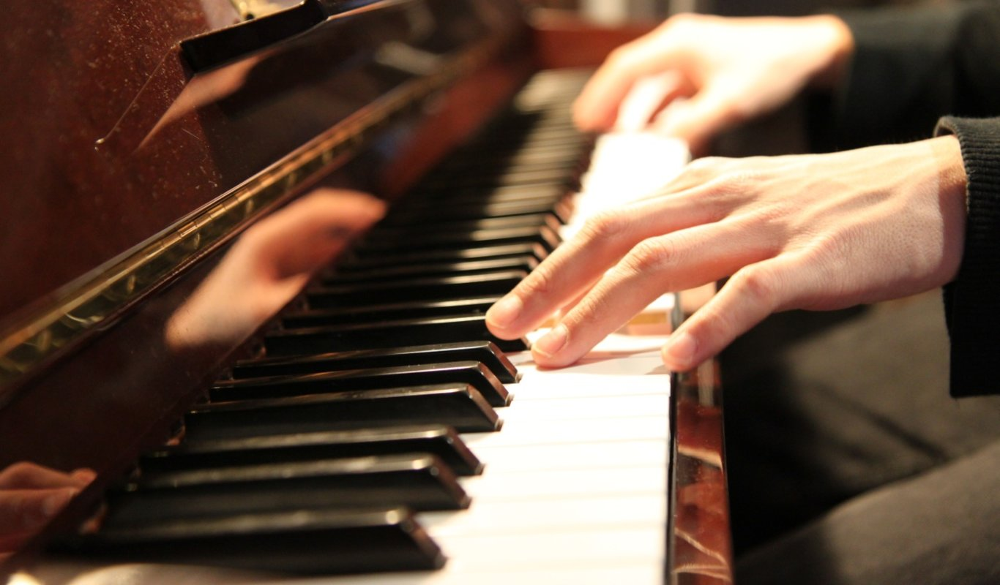

Básico: $2,500.00
Intermedio: $2,750.00
Avanzado: $3,400.00
En el presente curso el alumno tendrá el perdil del dominio del piano desde las técnicas básicas e identificación así como la creación y manejo de distintos acordes y ritmos que puedan presentarse en solitario o en orquesta para distintas luminarias.
Aprenderá lo siguiente:
-
Inicio e identificación del piano
-
Tipos de Piano
-
Diferencias entre pianos
-
¿Qué piano elegir?
-
Técnicas y Escalas
-
Mantenimiento de pianos
-
Partituras y Notas
-
Inversión de acordes
-
Diversas Canciones a elegir y elegidas por docentes (previamente autorizadas)
Docente a nivel Basico: Oscar Angel Mirreyes
Docente a nivel Intermedio: Paulina Sarahí De los Ángeles Salcido
Docente a nivel Avanzado: Daniela Montez Carrillo